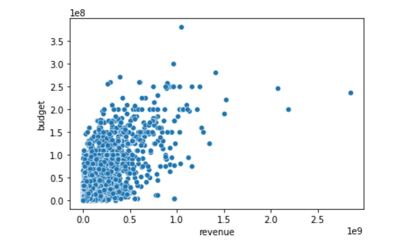

The scatter plot shown displays data points that correspond to the movie's budget and revenue values.
Our hypothesis was that if a movie had a higher budget it had more of a chance of becoming a box office hit.
Based on this plot, there looks to be a slight positive correlation to budget and revenue. According to the
correlation matrix on the homepage, there is a correlation of 0.8 between budget and revenue.